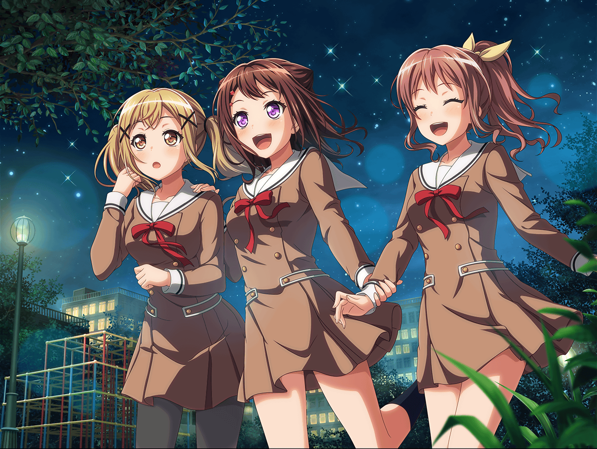

公園
有咲
サイテーだな……
何やってんだよ、私って……っ！
ホント、カッコわりーな……
有咲
……私なんてポピパにいない方が、いいのかもな――
香澄
有咲はカッコ悪くないし、最低なんかじゃない！
有咲がポピパをやめるなら、ポピパは解散だよっ！
有咲
は！？ な、なんでそうなるんだよ！？
私よりうまいやつなんていくらでもいるだろ？
香澄
違うよっ……！ 有咲だけじゃない！
さーや、りみりん、おたえ！ その誰かが抜けちゃっても、
私はもう絶対にキラキラドキドキできないんだよ！
沙綾
香澄……
有咲
キラキラドキドキ……？
香澄
前に、有咲の家の蔵でクライブしたよね？
あの時、みんなで演奏して、
私、すっごくキラキラドキドキできた！
香澄
有咲だってそうでしょ？
有咲
それは……
香澄
私ね、ずーっと思ってたの。
バンドってすごいな、音楽って偉大だなー、って
香澄
だって、どんなに気持ちが沈んでたって、
みんなで一緒に演奏すれば、心がキラキラドキドキして
そんなのすぐに吹っ飛んじゃうんだもん
香澄
だけど、この前の練習の時、おたえに言われて気づいたの。
私がキラキラドキドキしてたのは、
音楽だけの力じゃないって――
香澄
さーやとりみりんとおたえと……有咲と！
一緒に演奏してたからなんだって！
香澄
だから……だから、有咲……っ！
ポピパにいない方がいい、なんて……言わないでよ！
有咲
そっか……
なるほどなー、そういうことだったんだ……
沙綾
ん？ どうしたの？
有咲
私……バンドをやる前は、学校でもずっと１人だっただろ？
だから、１人でいることには慣れてるはず……
だったんだけどさ……
有咲
今は学校に１人でいると退屈で、なんか、寂しくて……？
早く学校終わんねーかなって……
有咲
それまでは、なんにも思わなかったのに、
今は気づくとみんなのこと考えちゃってるんだよ
有咲
香澄は何してるかな、とか、
りみに悪いことしちゃったな、とか、
もう、そんなことばっかり考えちゃってさ……
沙綾
有咲の気持ち、わかるかも。
私もここのところ、ずっとみんなのこと考えてたもん
有咲
それで結局、勉強だって全然手につかなくて。
みんなで一緒にいるのが当たり前みたいになってたけど……
有咲
なんつーか……
当たり前って、偉大なんだな
沙綾
だね
有咲
あのさ、私……
りみに謝りたい
香澄
えっ！？
有咲
今回のことは全部私に原因があるからさ……
あんなひでーこと言って、りみを傷つけちゃったから
有咲
何回もスマホのメッセージ送ろうとしたんだけど、
ずっとここで止まっちゃっててさ。
私、こういうのよくわかんねーんだよ……
香澄
もしかしてそのメッセージ、ずっと編集してたの？
有咲
書いては消して、書いては消して。
もうずっとそれの繰り返しって感じ。
なんかうまく言葉にできなくて、自分の気持ちがさ……
有咲
だって――
有咲
いままでこんな難しい問題、
テストに出なかったし……
香澄
…………
よかった……ホント……よかった……っ。
……うう……っ
有咲
香澄……？
香澄
私ね……
有咲がポピパのこと嫌いになっちゃったんじゃないかって、
心配してたの……っ！
有咲
き、嫌いになるわけねーじゃん……
だからこんなに悩んでるんだよ……
大好き、だから――
香澄
有咲～っ！
有咲
か、香澄……っ。
そ、そんな急に抱きつくなってっ
香澄
りみりんのところ、３人で一緒に行こうよ！
りみりん、風邪も良くなってきたみたいだから、
そろそろ学校にも来ると思うし
有咲
うん……
つ、つーか……っ。
そんな強く抱きつかれたら痛いって
香澄
やだ、絶対離れない……っ
有咲
………………
………………
………………し、しかたねーなー
有咲
あ、あのさ、香澄……
その……
心配かけて……ごめん、な
香澄
私こそ、ごめんね……
有咲がポピパのこと嫌いになっちゃったのかもって思っちゃった。
そんなわけないのにね
沙綾
ふふ……
沙綾
ていうか、２人ともズルいよー。
私も仲間に入れてよ
香澄
ああ、そっか！
はい！ さーやもこっちおいで！
沙綾
ふふっ……
うそうそ、冗談だって。
はぁ～、でも、ホントによかった～……
沙綾
……あ。
ねぇ、２人とも。
空、見てみて……
有咲
ん？ 空？

香澄
わーーーーっ！
星がすごいねーっ！
沙綾
いつも以上にキラキラして見えるのは……
私の気のせいかな？
香澄
ううん！ 絶対、気のせいじゃないよっ！
私にもそう見えるもん！
ねえ、有咲！？ 有咲もそうでしょ！？
有咲
……うん。
確かにいつもより、キラキラしてる、かも――